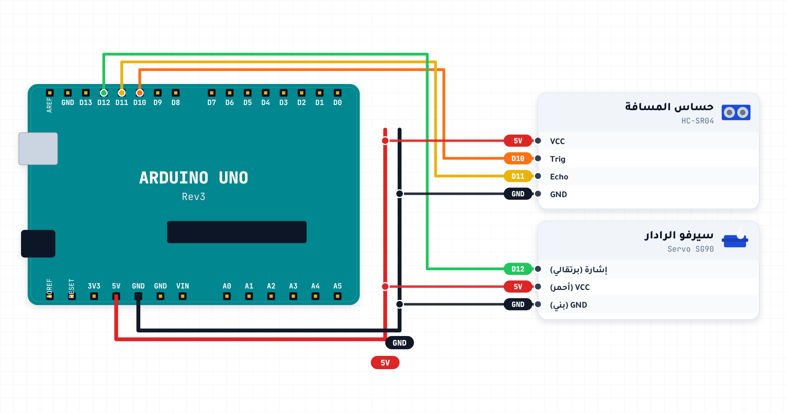

▶فيديو الشرح
حساس يدور على سيرفو ويرسل الزاوية والمسافة إلى الحاسوب الذي يرسم شاشة رادار حقيقية.
1المكونات
ARDUINO UNOboardحساس المسافةHC-SR04سيرفو الرادارServo SG90أسلاك توصيلJumper Wiresلوحة تجاربBreadboard
2مخطط التوصيل

اضغط على المخطط لتكبيره · نسخة SVG عالية الدقة
| القطعة | الطرف | يوصل إلى |
|---|---|---|
| حساس المسافة | VCC | 5V |
| حساس المسافة | Trig | D10 |
| حساس المسافة | Echo | D11 |
| حساس المسافة | GND | GND |
| سيرفو الرادار | إشارة (برتقالي) | D12 |
| سيرفو الرادار | VCC (أحمر) | 5V |
| سيرفو الرادار | GND (بني) | GND |
3الكود
المكتبات المطلوبة (من Arduino IDE ← Sketch ← Include Library ← Manage Libraries):
- Servo (مدمجة مع Arduino IDE)
/* المستوى المتوسط — المشروع 5: رادار كشف الأجسام (Ultrasonic Radar) كتاب: 38 مشروع في شهر — لؤي النصري (@robotlouay) التوصيل: HC-SR04: VCC → 5V GND → GND Trig → Pin 10 Echo → Pin 11 Servo: أحمر → 5V بني → GND إشارة → Pin 12 يرسل الأردوينو "الزاوية,المسافة." عبر المنفذ التسلسلي (9600). شاشة الرادار: شغّل الملف radar_display.pde في برنامج Processing (غيّر رقم المنفذ COM داخل الملف). */ #include <Servo.h> const int TRIG_PIN = 10, ECHO_PIN = 11, SERVO_PIN = 12; Servo radarServo; int distanceCm() { digitalWrite(TRIG_PIN, LOW); delayMicroseconds(2); digitalWrite(TRIG_PIN, HIGH); delayMicroseconds(10); digitalWrite(TRIG_PIN, LOW); long t = pulseIn(ECHO_PIN, HIGH, 30000); return t == 0 ? 0 : t * 0.034 / 2; } void sendReading(int angle) { radarServo.write(angle); delay(30); // استقرار المحرك قبل القياس int d = distanceCm(); Serial.print(angle); Serial.print(","); Serial.print(d); Serial.print("."); // الفاصلة تفصل القيم والنقطة تنهي القراءة } void setup() { Serial.begin(9600); pinMode(TRIG_PIN, OUTPUT); pinMode(ECHO_PIN, INPUT); radarServo.attach(SERVO_PIN); } void loop() { for (int a = 15; a <= 165; a++) sendReading(a); for (int a = 165; a >= 15; a--) sendReading(a); }
هذا المشروع يعتمد على مكتبات أو لوحات غير متوفرة في mBlock 5، لذلك نستعمل Arduino IDE. انسخ الكود من تبويب Arduino IDE.
4كيف يعمل؟
- السيرفو يدور من 15° إلى 165°
- عند كل زاوية يُقاس البعد
- يُرسل "الزاوية,المسافة." عبر Serial
- برنامج Processing يرسم الرادار
⚠ قبل توصيل الكهرباء: راجع كل سلك مع الجدول أعلاه، وتأكد من عدم وجود تماس بين 5V و GND. اختر اللوحة والمنفذ الصحيحين من قائمة Tools في Arduino IDE.